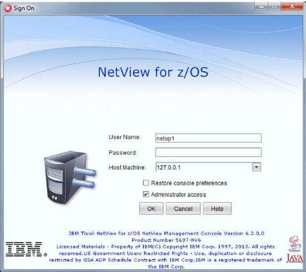
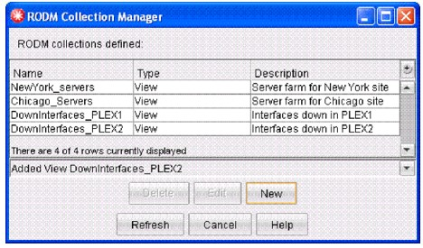
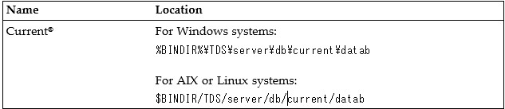
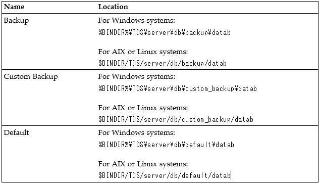

This chapter includes the following information:
v Starting the topology server
v Starting the topology console
v Signing on from the topology console window
v Using the HOSTCMD command
v Stopping the topology server and topology console
v Retrieving inventory data on IP resources
v Writing server information to the NetView management console databases
v NetView functions available through NetView management console
The following sections describe how to start the topology server either manually or automatically. This task is usually completed by a system administrator for all topology console operators. If you do not need to start the topology server, skip to “Starting the Topology Console” on page 55.
Note: If you receive messages about the topology server, see the topology console help index for information about the messages.
For Windows operating systems, double-click the Start NMC Server icon on the desktop.
Perform the following steps to start the server and to activate the TCP/IP or LU 6.2 connection to the IBM Tivoli NetView for z/OS environment:
1.Open a workstation command window or shell prompt, depending on your operating system.
2.Change to one of the following directories:
v For Windows: %BINDIR%\TDS\server\bin
v For AIX or Linux: $BINDIR/TDS/server/bin
Note: BINDIR is an environment variable used by the Tivoli Framework to define path information used by Tivoli applications. For both Windows systems and AIX or Linux systems, if the Tivoli Framework is not installed on the platform from which the topology server is run, the installation process installs the setup_env.cmd command file or setup_env.sh script file that defines BINDIR.
For Windows, AIX, and Linux for z Systems®, you might want to update the PATH environment variable to make running topology server commands from any directory in a command prompt more convenient.
Depending on the path used during installation, the Framework for the topology server typically has one of the following BINDIR values:
v usr\local\Tivoli\bin\interp
v local\Tivoli\bin\interp
v Tivoli\bin\interp
In these BINDIR values, interp has one of the following values:
v For Windows, w32-ix86
v For AIX, aix4-r1
v For Linux for z Systems, linux-s390
3. Enter one of the following commands to start the topology server:
v For Windows: tserver start
v For AIX: ./tserver start
v For Linux for zSeries: ./tserver start
Because Linux for z Systems has no display, perform the following steps before issuing this command to start the server:
a.Telnet to the host.
b.From the workstation used to perform the Telnet, export the display to the workstation. To do this, use the following command:
export DISPLAY=ip_addr:0.0
where ip_addr is the IP address of the workstation.
Notes:
a. You must be the root user to start the topology server.
b. On a AIX or Linux system, if the topology server has been manually stopped and cannot be restarted, see Step 4 on page 67.
If the topology server is configured to start manually, select the Control Panel →Services control applet:
1. Select Topology Communication Server and click Start.
2. Select Topology Server and click Start.
If the topology server is configured to start automatically, it starts when the system is started.
For AIX or Linux systems, issue the following command to start the topology server processes at system startup and have them run as daemons:
$BINDIR/TDS/server/bin/config -d
Note: You must be the root user to issue this command.
If communication between the NetView management console topology server and the NetView program is not active, you can issue the NETCONV command to start the communication. Usually this communication is defined to start automatically during NetView initialization. To start communication using TCP/IP, that was defined to start automatically but is not currently active, enter:
NETCONV STARTCON=ip_sysdef
To start communication using SNA, that was defined to start automatically but is not currently active, enter
NETCONV STARTCON=lu_sysdef
These NETCONV commands cause the connection to be established under the autotask that is defined by the function.autotask.NetConv statement in the CNMSTYLE member.
If you did not define communication to start automatically, you can use the NETCONV command with the ACTION=START keyword or with the STARTCON=ip_sysdef / lu_sysdef keyword to start communication under the task issuing the NETCONV command.
Note: If the task under which communication is established ends for any reason, the connection is broken. This is true for both the autotask that is specified in the CNMSTYLE member or the task under which the NETCONV command (with ACTION=START or STARTCON=ip_sysdef / lu_sysdef ) was issued.
For more information about the NETCONV command, see the online help.
You can start the topology console by selecting a desktop icon in Windows operating systems, or you can start it by issuing the command in line mode from any operating system, or from the Tivoli Desktop.
Note: You can also launch the NetView management console from other applications. For information, see Appendix D, “Launching and Using the NetView Management Console from Other Applications,” on page 143.
For Windows operating systems, an icon is created on the desktop. To start the topology console using a Windows operating system, double-click the icon.
Change to the appropriate directory for your environment:
v For Windows systems: \usr\local\Tivoli\bin\generic_unix\TDS\client\bin
v For AIX or Linux systems: /usr/local/Tivoli/bin/generic_unix/TDS/client/bin
From the directory, issue the appropriate operating system specific command to start the topology console:
v For Windows systems: tconsoleNT .. -key nmc
v For AIX or Linux systems: tconsole.sh .. -key nmc
See Appendix B, “Topology Console Commands,” on page 123 for complete information about all of the tconsole command-line arguments and supported environment variables.
Note: To avoid problems when starting the topology console on AIX or Linux systems, add the directory that contains the xhost command to the PATH environment variable.
Figure 1 on page 56 shows the topology console Sign On window.

Figure 1. Sign On Window
Follow these steps to sign on to the topology server:
1. Type a user name in the User Name entry field of the topology console Sign On window.
Notes:
a.The user ID must match your NetView user ID.
b. To restrict access to selected NetView operators to sign on to the topology console, use the DUILOGON command with the NMC keyword. This can be protected by command security (NetView command authorization table or SAF), and permitted to particular operators or groups. An example of this is commented out in the sample command authorization table CNMSCAT2 and the sample SAF command authorization table CNMSAF2. For more information, refer to the IBM Tivoli NetView for z/OS Security Reference.
2. Type a password or password phrase in the Password field.This password or password phrase must match your NetView for z/OS password or password phrase.
3. In the Host Machine field, type the IP host name or IP address of the topology server that you want to sign on to . Either specify a new host name or IP address, or select a host name or IP address from the list of topology servers. The list shows the topology servers that you have used.
If you reassign the topology server console port, specify the port number in this field the first time you sign on using this new port. However, the topology console retains the server:port setting on subsequent sign-ons and uses that
setting as the default. See “Establishing Communication Between the NetView Host and the Topology Server” on page 54 for more information.
4. If you previously signed on to NetView management console and saved the settings for the appearance of the topology console windows, you can select Restore console preferences.
5. To use administrative functions, such as customizing settings and applying them to all topology consoles of this topology server, select Administrator access. More than one person can sign on with administrative access. In this case, one administrator can overwrite changes made by another administrator. The values saved last apply to all topology consoles.
Notes:For more information about authorization, see IBM Tivoli NetView for z/OS Administration Reference; specifically, see the information about the NGMFADMN keyword.
6. Click OK to sign on to NetView management console. The topology console window, which is shown in Figure 2 on page 59, is displayed.
Notes:The first time you start the NetView management console, expect a delay as support files are downloaded to the topology console. On subsequent calls of the topology console, only files that have been updated on the topology server are downloaded.
7. If a later level of the NetView management console is available, a message is displayed asking if you want to update the code.
v If you choose Yes, the sign-on window takes a short time while the latest level of code is downloaded. Then, the NetView management console is restarted and you can sign on again with the updated code.
v If you choose No, signon is stopped.
Notes:
1. If you want to run commands, ensure that the NGMFCMDS keyword is set to YES (NGMFCMDS=YES). The default is YES. For more information about the NGMFCMDS keyword, see IBM Tivoli NetView for z/OS Administration Reference.
2. For more information about how files are automatically downloaded from the server at sign-on, see Appendix G, “Automatic File Download at Console Log On,” on page 175.
Figure 2 on page 59 shows the topology console window. The following list describes the areas on the topology console window:
v In addition to the menu bar, the toolbar contains selectable icons that provide a quick way to perform the most commonly used functions.
v The progress indicator is on the toolbar. It shows Loading... when the topology console is communicating with the topology server. To cancel a request that is still in progress, click the progress indicator.
v The business tree shows all views. Each node represents a view. You can click the plus (+) or minus (-) sign for a node to expand or collapse the node.Double-click a node to open a view for that node.
Note: The icons in the business tree display actual status only in certain cases. The Business Systems branch of the business tree displays accurate status. The other branches of the business tree display a satisfactory status, though this is not an accurate representation of the status of the resources they contain. When
a node that represents a resource is dynamically added to the business tree as a result of more-detail navigation, the status represents that of the resource. It does not represent the aggregate status of all resources in the view.
v The work space contains the view area and the filter bar. See “View Area” on page 59 and “Filter Bar” on page 60 for details. You can detach the work space to view several different views at the same time.
v The log contains messages, issued commands, and command responses.Although command responses can be received asynchronously, they are always displayed following the issued command.
Note: The log is not displayed by default. To display the log, click Options > Show Log.
When the visible portion of the log is full, the log begins to automatically scroll. To change this option so that you can manually scroll the log, right-click the log window and clear Automatic Scrolling.
To save the log, click File > Save Log. You can save the log to a file on the server or on the console. If you click Save Log to Console, a window is displayed so that you can specify the name and location of the file. For additional information, see the online help for the menu choices.
Note: To clear the console log, use the context menu.
v The view bar displays buttons for all open views in the order that they were opened. You can click any of the buttons in the bar to re-display a previously opened view.
v The status area displays the following information:
– The text about the resource or business tree item under the cursor, or the status of any action in progress
– The name of the topology server connection, your host name, the sign-on time and date, the mode you are currently using, NETCONV status, and the topology console IP address
–Information about the displayed view
Figure 2. Topology Console Window
The view area of the topology console window contains a notebook that displays different types of views of your resources. Resources can be displayed in topology or details views.
v Topology views display resources and their statuses in a graphical format.Topology views are especially useful in displaying the relationships between resources, for example, displaying connectivity. Resources in a topology view are often placed on a background image, such as a building map or geographical map, which shows their general location and proximity to each other.
v Details views display resources and their statuses in a list format. Details views contain additional information about resources, such as type and description. You can also use them to control the order in which resources are displayed, such as by time stamp or status. Null nodes and null links are never displayed.
Within a view, context menus contain various commands and functions that are available for a resource. To access a context menu, right-click a resource. A menu is displayed with a list of the available actions for that resource. To access a context menu for the view, right-click in any area of the view that is not over a resource. (If your details view is full, right-click any column heading.) A menu that shows the available actions for the view is displayed.
You can print a topology or details view by clicking File > Print or the Print button on the menu bar. Note that you cannot zoom in on a topology view and print it. To print a larger picture of a view, resize your window and then print the view.
The filter bar displays the number of resources in the current view at each status or by flag set. This status is indicated in views by the color of the resource.
Note: The filter bar is not displayed by default. To display the filter bar, click
Options > Show View Filter.
You can use the filter bar to prevent resources with particular statuses from being displayed in the current view. To filter resources with a particular status, click the corresponding button to that status on the filter bar.
v In topology views, filtered nodes are displayed as empty boxes and filtered links are displayed as dashed lines.
v In details views, filtered resources are not displayed.
The filter bar continues to display the number of resources in each status. To temporarily re-display a filtered resource in a topology view, including its status, icon, and so on, position your cursor on the resource without clicking.
You can customize the statuses that are displayed on the filter bar in the Status page of the Console Properties notebook.
NetView management console provides the following kinds of online help from the topology console:
v Menus
v Dialog boxes and notebook pages
v Windows
v Overview
v Messages for the topology server and topology console
v Commands
v A Legend function that displays a window containing descriptions of all resource that are types defined to the topology server.
v The ability to display a web site
v Help Index, which you can use to search the help facility. Use a task index to find help on specific tasks. If you receive messages about the topology server, look in the Help Index for information about the messages.
This section describes some of the functions of the NetView management console.
The following IP commands can be issued from the NetView management console interfaces:
v Ping
v Tracerte (trace route)
v Netstat (Network host status)
You can issue the available IP commands from the NetView management console topology console screen in one of two ways:
v Right-click a resource and select IP Commands from the context menu. This is available for any resource that contains an IP address.
v From the view background, right-click the background and select IP Commands from the pop-up menu.
From the IP Commands menu, the following items are available:
v onetstat
v ping
v tracerte
When you select ping, onetstat, or tracerte, a dialog box is displayed. If the menu was accessed from a resource and you select ping or tracerte, the IP address for that resource is inserted into the Host Machine field of the dialog box. The ping command can also be started without opening a dialog box when the menu is accessed from a resource.
Use the NetView Resource Manager to manage all NetView programs in an enterprise with the NetView management console. The NetView Resource Manager collects task information and forwards this information to a manager NetView for processing. The processed information is stored in RODM.
Use the NetView management console interface and the NetView Resource Manager to build views to monitor your enterprise. After RODM is populated, you can use the NetView management console to monitor the NetView program. The views created by the NetView Resource Manager are network views represented in the view tree as NetView Task views. Selecting a NetView Task view results in a view of NetView domains. This view of NetView domains is the first NetView Resource Manager network object that can be selected from the NetView management console and it is an aggregate. Selecting More Details from this view opens a view containing aggregate objects which represent NetView tasks. Each NetView task aggregate can then contain real objects representing the following
items:
v CPU
v STG
v MQIN
v MQOUT
v MSGCT
v IO
v status (active/inactive)
Sample views are provided to monitor and manage NetView tasks.
If you want information about... Refer to...
RODM Collection Manager enables arbitrary grouping of objects into views or aggregates. Unlike BLDVIEWS which are static, the RODM Collection Manager dynamically manages the views or aggregates. This means that RODM Collection Manager continually updates the views or aggregates, so that you can add, change, or delete collections. To access RODM Collection Manager from the NetView management console, you must be signed on as an administrator.
Figure 3 shows the RODM Collection Manager main menu.

Figure 3 shows the RODM Collection Manager main menu
The topology server databases are used to save server information between restarts of the server. The server information contained in these databases includes the following kinds of data:
v Resource data for all resource types
v Operator data for all operators that have logged on
v View data for all saved views
v Command data for all customized commands
When the topology server starts, it loads the data from the first server database directory that contains a database that can be loaded. Table 33 lists the topology server databases, in the order that they are searched for databases that can be loaded.
Table 33. Topology Server Databases

Table 33. Topology Server Databases (continued)

The default database contains the initial (default) server information. When the server is started for the first time after installation, the default database is loaded. The current and backup databases do not contain server information when the server is loaded for the first time after installation.
The current and backup databases contain the most recent copy of the server information after the server is stopped or checkpointed. Generally, the current and backup databases contain identical server information, but, in some cases, only the current database is updated with server information. For more information, see “Writing Server Information to the Topology Server Databases.”
The custom_backup database is used to save a customized version of the server information at a known level of customization. This database is not continuously updated by stopping or checkpointing the server. Use this database to protect your server information from undetected database corruption.
Writing server information to the topology server databases is also known as checkpointing. Server information is written to the topology server databases either manually or automatically.
The default database is never written during a database checkpoint and serves as a starting database if one or all of the other databases become corrupted. The other databases are written based on the type of checkpoint requested. Server information is written to the topology server databases automatically for the following reasons:
v The autoCheckpointInterval or autoCheckpointDaily properties of the server.properties file are enabled. These properties are explained in the server.properties file. For more information about this file, see “Modifying the Server Properties File” on page 11. All server information is checkpointed to the current database. If the checkpoint completes successfully, the current database is then copied to the backup database.
Note: The default setting for these properties result in automatic checkpoints at 1 a.m. every day.
v A view is customized and saved to the topology server. Only the files that were changed for the view customization are written, and they are written only to the current database.
v The command profile editor batch utility is run. Only the files that were changed for the command customization are written, and they are written only to the current database.
v The command profile editor batch utility is run. Only the files that were changed for the command customization are written, and they are written only to the current database.
To manually write information to the topology server database, use either the tserver utility -c command or the tserver utility -cc command.
The tserver utility -c command manually checkpoints all server information to the current database. If the checkpoint completes successfully, the current database is then copied to the backup database.
The tserver utility -cc command manually checkpoints all server information to the custom_backup database. The custom_backup database is used to save a customized version of the server information at a known level of customization. The custom_backup database is meant to override the default database if the current and backup databases become corrupted. For more information about how to use the custom_backup database, see “Creating and Importing Backup Copies of Customized Topology Server Databases” on page 65.
If your installation has a large number of customized views or commands, it is recommended that you use the tserver utility -cc command whenever you make significant changes to the customized views or commands. When you have used this command, you can restore the server information to a known good copy of the database that contains your recent customization if the current and backup databases become corrupted.
One or more of the topology server databases can become corrupted, causing the server to fail to start or to behave abnormally after it starts. Corrupted databases can cause either or both of the server processes (the topology data server and the topology communications server) to end.
Topology server databases can become corrupted for the following or other reasons:
v The topology server process is incorrectly stopped; for example, stopping a topology server process by closing the topology server window instead of using the tserver stop command. Abruptly stopping the topology server in this manner prevents it from properly updating the databases before it stops.
v The file system used by the topology server runs out of space, preventing the topology server from updating its databases.
v The topology server encounters an internal failure, which results in the topology server stopping abnormally.
The default and custom_backup databases are not likely to be corrupted. Most database corruptions are the result of a corruption in the in-storage copy of the
database. Because the in-storage database is written only to the current and backup databases, the default and custom_backup databases can be used as your recovery databases.
If you suspect a database corruption problem, perform the following steps:
1. If the server is running, stop the server.
2. Make a backup copy of the current and backup databases. You might want to recover these databases if the problem is not a database corruption problem.
3. Restart the topology server. The topology server attempts to detect database corruption on initialization. If it detects database corruption, the server attempts to restore the database from the next database that can be loaded. See Table 33 on page 62 for the database recovery order.
4. If the server successfully starts, then your database has been recovered. If the server does not start, continue with the next step.
5. Erase the current database.
6. Restart the topology server. This automatically copies the backup database to the current database. If the server successfully starts, then your database has been recovered. If the server does not start, continue with the next step.
7. Erase both the current and backup databases.
8. Restart the topology server. At this point, the database has been recovered either from the default database or, if you are using a custom backup, from the custom_backup database.
If the topology server successfully starts, then the problem was that the original contents of both the backup and current database directories were corrupted. If you previously saved a copy of the databases, you can optionally use the saved copy to restore the topology server databases, as described in “Creating and Importing Backup Copies of Customized Topology Server Databases.”
If the topology server does not start, then the problem is not because of corrupted databases. To continue problem determination, see the IBM Tivoli NetView for z/OS Troubleshooting Guide for information about diagnosing NetView management console and Graphic Monitor Facility host subsystem (GMFHS) problems.
If you plan to customize many views or commands, you should create a backup copy of the database to insure that your customization is not lost if the server database becomes corrupted.
v Perform customization first on a test, or non-production, server.
v Perform customization first on a test, or non-production, server.
After you perform the customization, create a backup copy of the server databases that contain the customization using the following steps.
Note: This procedure requires stopping and restarting the server.
1. To manually write (checkpoint) the topology server databases to the custom_backup directory, enter the following command and wait for it to complete successfully before proceeding to the next step:
tserver utility -cc
2. Stop the server.
3. Delete all the files in the current database directory, but do not delete the directory itself.
4. Copy all the files from the custom_backup database directory to the current database directory.
5. Start the server. Verify that the server does not issue an error message indicating that the database is corrupted.
To import the custom_backup database directory to other servers, perform the following steps:
1. Stop the server to which the database is to be imported (the import server).
2. Copy the custom_backup directory from the test server to the custom_backup and current directories on the import server.
3. Restart the import server.
To stop the topology console, select File → Exit from the topology console window. The topology console and all windows are closed.
The procedure for stopping the topology server depends on the platform on which the topology server is running. For Windows, you can stop the topology server by selecting an icon or entering a line-mode command. For AIX, you can stop the topology server only with a line-mode command. The following sections describe the steps for stopping the topology server on each type of platform. For Linux for zSeries, you can stop the topology server one of two ways: with a line-mode command or by clicking the X in an X Window System window if the server was started with tserver start.
Attention: Do not stop the topology server by clicking the X unless the topology server is running on the Linux for zSeries platform and was started with tserver start.
To stop the topology server in this environment, select the Control Panel →Services control applet, or enter the ihsxsrv stop command from the %BINDIR%\TDS\server\bin directory on the topology server.
To stop the topology server when it is running without problems, complete the following steps:
1. Open a workstation command window.
1. Open a workstation command window.
2. Change to one of the following directories
v For AIX or Linux systems: $BINDIR/TDS/server/bin
v For Windows systems: $BINDIR%\TDS\server\bin
3. Enter the tserver stop command to stop the topology server.
The tserver stop command, with no flags, stops the topology server. For AIX or Linux systems, only root users can stop the topology server.
4. For AIX or Linux systems only, if the topology server is suspended, or if a daemon has trapped, issue the tserver stop command a second time with the -f flag in the following way:
tserver stop -f
The tserver stop -f command forces running daemons to stop, and cleans up any remaining inter-process communication resources that were used by the daemons.